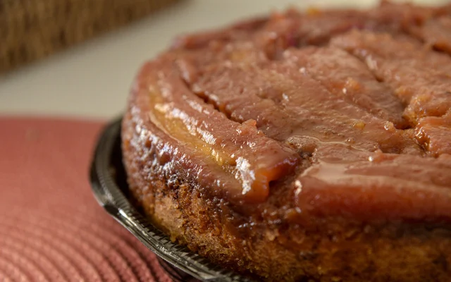

Bolo de banana
| Dificuldade | Porções | Tempo de preparo |
|---|---|---|
| Fácil | 12 pedaços | 01 hora |

Ingredientes
- 3 ovos
- 1 e 1/2 (chá) de açúcar
- 1 xícara de leite
- 1 colher (sopa) rasa de fermento
- 3 colheres (sopa) de margarina
- 1 pitada de sal
- 2 xícaras de farinha de trigo
Cobertura
- 1 xícara de açúcar
- 4 a 5 bananas
Modo de preparo
Cobertura
- Despeje o açúcar em uma forma redonda com furo central e leve ao fogo até que esteja completamente derretido.
- Logo após, fatie as bananas e disponha sobre o açúcar caramelizado.
Massa
- Bata as claras em neve e separe.
- Em outra travessa, bata os ovos com a margarina e o açúcar.
- Acrescente a farinha, o leite, o sal e o fermento.
- Por último, misture as claras em neve e continue batendo.
- Despeje a massa na forma caramelizada com as bananas fatiadas.
- Leve em forno médio (180° C), preaquecido, por 30 minutos.